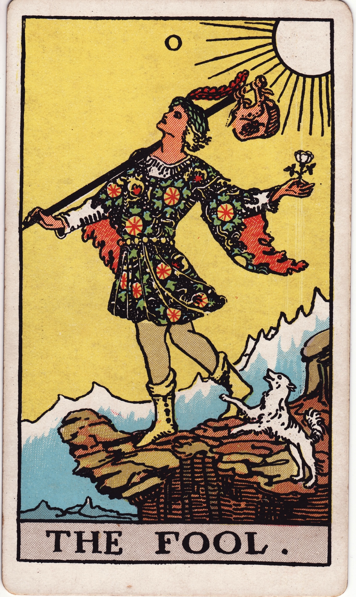
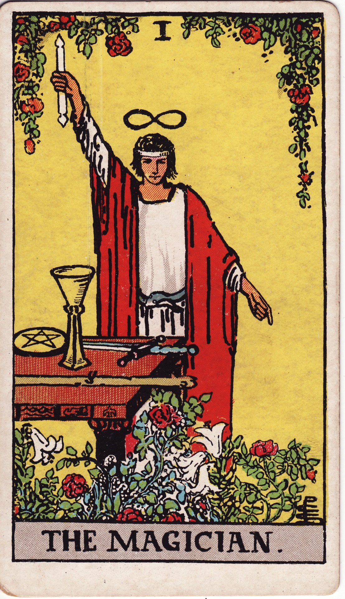
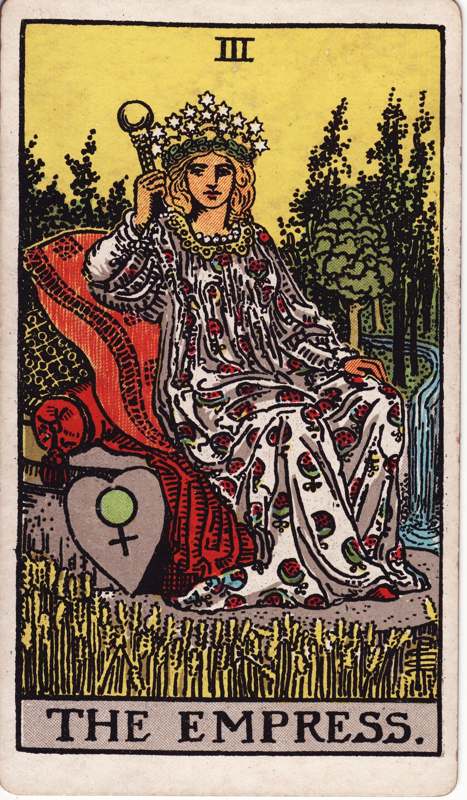
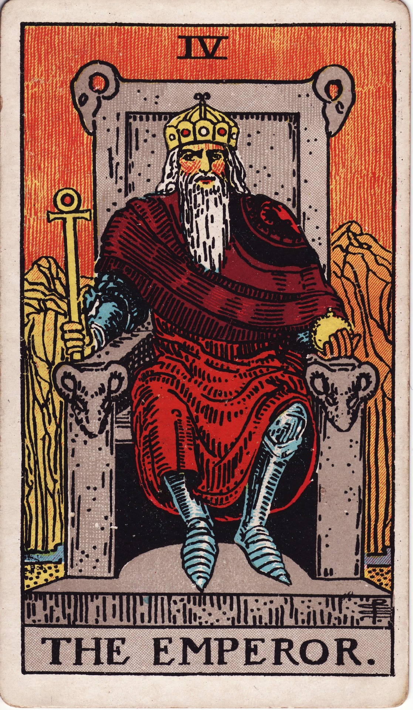
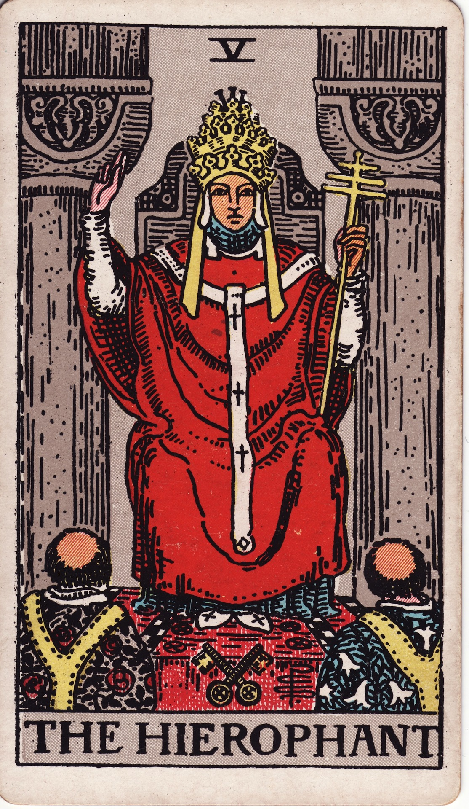
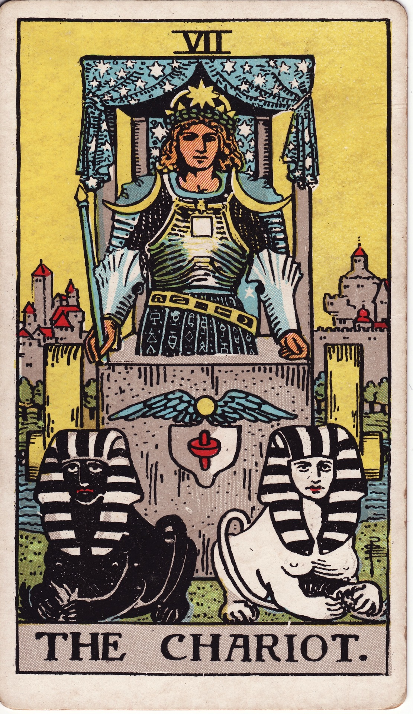
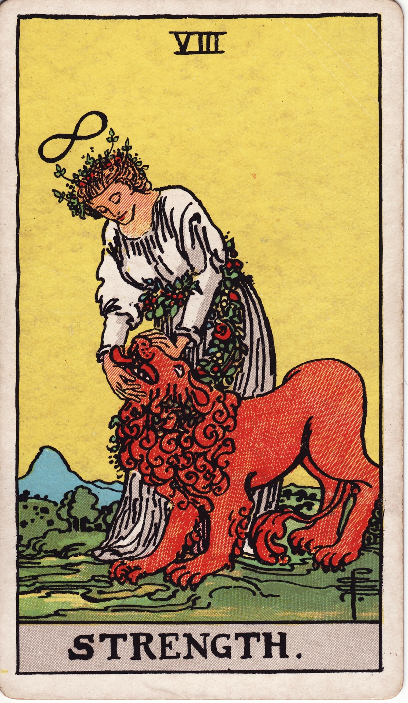
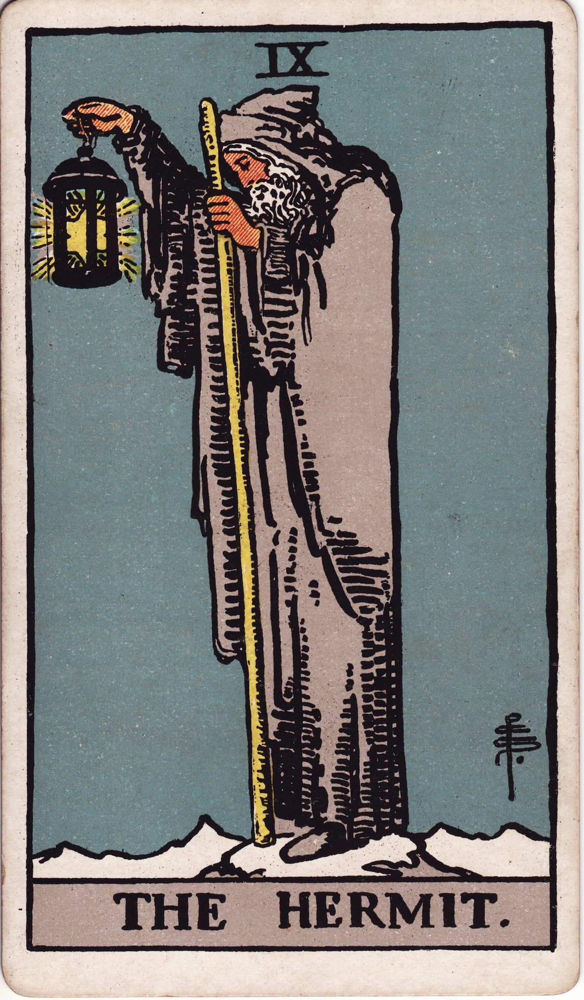

Single-Card Reading
A focused interface modeling direct vector trajectories. Select any card designation from the scriptorium logbook directory sidebar to project its associated imagery, archival attributes, and historical structural description into the workstation viewing frame.
System Idle
Interact with the card selector menu to the left to pull structural assets into focal alignment.

The Fool
Arcana 0Attributes
Description
The Fool represents the true absolute genesis point of a major existential journey, representing raw innocence, boundless freedom, and stepping gracefully out into the terrifying unknown with an entirely open heart.

The Magician
Arcana IAttributes
Description
The Magician signals a position of absolute alignment where you hold full access to the elemental tools, conscious intellect, and divine capabilities required to turn physical goals into absolute concrete realities.

The High Priestess
Arcana IIAttributes
Description
The High Priestess points towards deep internal landscapes, calling on you to pause your external actions, pull back from mundane distractions, and rely implicitly on your subconscious instincts and inner guidance layers.

The Empress
Arcana IIIAttributes
Description
The Empress embodies raw creation, domestic comfort, material abundance, and a profound connection to the comforting, cyclical cycles of the earth and nurturing unconditional maternal expressions.

The Emperor
Arcana IVAttributes
Description
The Emperor represents systemic governance, structural stability, and the protective, paternal force of law. He stands as a monument to organizational order, establishing firm boundaries and solid foundations upon which civilizations are built.

The Hierophant
Arcana VAttributes
Description
The Hierophant serves as the institutional bridge to historical legacy and sacred lore. He embodies conventional wisdom, spiritual mentorship, and the inherited philosophical codes passed down through scholarly lineages and formal systems of belief.

The Lovers
Arcana VIAttributes
Description
The Lovers captures the profound tension of harmony, emotional reciprocity, and the convergence of dual forces. Beyond simple romantic ties, this framework points to critical decision thresholds that require a deeper alignment of core ethics and personal identity.

The Chariot
Arcana VIIAttributes
Description
The Chariot represents a state of focused acceleration and absolute control over opposing psychological forces. It demonstrates victory achieved not by chance, but through sheer internal resolve, alignment of purpose, and the active conquest of conflicting environmental obstacles.

Strength
Arcana VIIIAttributes
Description
Strength models power stripped of crude or violent force, favoring quiet endurance and soft mastery over primal instincts. It highlights the integration of our shadow desires through patience, mental stamina, and the graceful subduing of internal passions.

The Hermit
Arcana IXAttributes
Description
The Hermit illustrates a deliberate withdrawal from societal noise to map subjective psychological baselines. Carrying a singular lantern of truth, this archetype favors independent structural analysis, self-evaluation, and searching out ancient wisdom away from collective consensus.

Wheel of Fortune
Arcana XAttributes
Description
The Wheel of Fortune underscores the mechanical reality of systemic loops, patterns, and inevitable structural decay. It serves as a reminder that external fortunes operate in volatile cycles, urging the observer to remain centered at the axis point rather than clinging to the spinning rim.